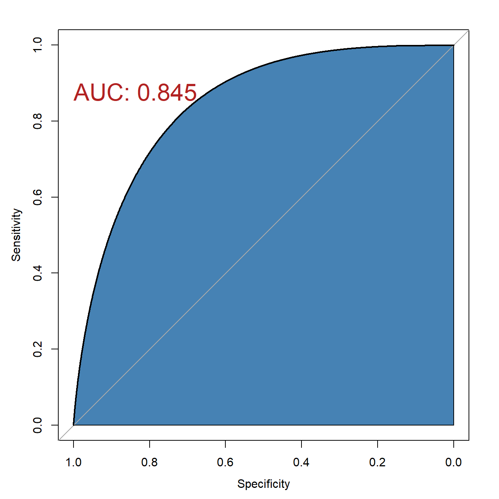
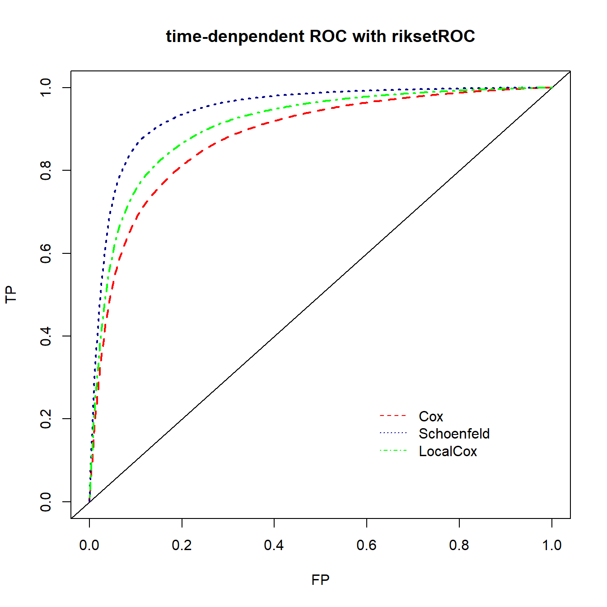

library(pROC)
data("aSAH")
str(aSAH)
## 'data.frame': 113 obs. of 7 variables:
## $ gos6 : Ord.factor w/ 5 levels "1"<"2"<"3"<"4"<..: 5 5 5 5 1 1 4 1 5 4 ...
## $ outcome: Factor w/ 2 levels "Good","Poor": 1 1 1 1 2 2 1 2 1 1 ...
## $ gender : Factor w/ 2 levels "Male","Female": 2 2 2 2 2 1 1 1 2 2 ...
## $ age : int 42 37 42 27 42 48 57 41 49 75 ...
## $ wfns : Ord.factor w/ 5 levels "1"<"2"<"3"<"4"<..: 1 1 1 1 3 2 5 4 1 2 ...
## $ s100b : num 0.13 0.14 0.1 0.04 0.13 0.1 0.47 0.16 0.18 0.1 ...
## $ ndka : num 3.01 8.54 8.09 10.42 17.4 ...27 平滑ROC曲线
通常大家画出来的ROC曲线都是曲折的，但是也有很多方法可以实现平滑的ROC曲线，观感上更加好看，但其实我觉得实用价值不是很大，而且虽然做到了平滑，但实际上是牺牲了一些准确度的。
27.1 二分类资料的平滑ROC曲线
直接通过pROC即可实现，这个包详细使用请参考：用pROC实现ROC曲线分析
pROC包中提供了一个aSAH数据集，这是一个动脉瘤性蛛网膜下腔出血的数据集，一共113行，7列。其中：
gos6：格拉斯哥量表评分outcome：结果变量gender：性别age：年龄wfns：世界神经外科医师联合会公认的神经学量表评分s100b：生物标志物ndka：生物标志物
可以直接在roc函数中指定，也可以使用smooth函数：
roc(aSAH$outcome, aSAH$wfns, smooth = T)
## Setting levels: control = Good, case = Poor
## Setting direction: controls < cases
##
## Call:
## roc.default(response = aSAH$outcome, predictor = aSAH$wfns, smooth = T)
##
## Data: aSAH$wfns in 72 controls (aSAH$outcome Good) < 41 cases (aSAH$outcome Poor).
## Smoothing: binormal
## Area under the curve: 0.8454
# 或者
rr <- roc(aSAH$outcome, aSAH$wfns)
## Setting levels: control = Good, case = Poor
## Setting direction: controls < cases
rrs <- smooth(rr)画图：
plot(rrs,auc.polygon=T,auc.polygon.col="steelblue",
print.auc=T,
print.auc.x=1,print.auc.y=0.9,print.auc.col="firebrick",
print.auc.cex=2)
27.2 生存资料的平滑ROC曲线
不考虑时间因素的ROC曲线可以使用pROC包中的smooth参数实现平滑版的曲线。time-dependent ROC目前还没发现比较好的方法可以直接实现，只能使用ggplot2曲线救国了。
rm(list = ls())
library(timeROC)
library(survival)
load(file = "./datasets/timeROC.RData")27.2.1 方法1：ggplot2
首先看一下数据结构，对于多个时间点的ROC，需要3列数据：time, event, marker(比如你计算得到的risk score)
首先还是借助timeROC包构建多个时间点的ROC对象：
ROC <- timeROC(T = df$futime,
delta = df$event,
marker = df$riskScore,
cause = 1,
weighting = "marginal",
times = c(1, 2, 3),
iid = TRUE)
ROC #查看模型变量信息
## Time-dependent-Roc curve estimated using IPCW (n=297, without competing risks).
## Cases Survivors Censored AUC (%) se
## t=1 57 203 37 71.02 3.68
## t=2 66 106 125 69.23 3.94
## t=3 68 74 155 65.53 4.85
##
## Method used for estimating IPCW:marginal
##
## Total computation time : 0.08 secs.默认的画出来也还可以，但是就是觉得可以更好看一点。
plot(ROC,
time=1, col="red", lwd=2, title = "") #time是时间点，col是线条颜色
plot(ROC,
time=2, col="blue", add=TRUE, lwd=2) #add指是否添加在上一张图中
plot(ROC,
time=3, col="orange", add=TRUE, lwd=2)
#添加标签信息
legend("bottomright",
c(paste0("AUC at 1 year: ",round(ROC[["AUC"]][1],2)),
paste0("AUC at 2 year: ",round(ROC[["AUC"]][2],2)),
paste0("AUC at 3 year: ",round(ROC[["AUC"]][3],2))),
col=c("red", "blue", "orange"),
lty=1, lwd=2,bty = "n") 
下面使用ggplot2画图。
首先是提取数据，这个提取数据比起lasso的真的是很简单了，不过现在提取lasso的数据也很简单。
df_plot <- data.frame(tpr = as.numeric(ROC$TP),
fpr = as.numeric(ROC$FP),
year = rep(c("1-year","2-year","3-year"),each = nrow(ROC$TP)))
head(df_plot)
## tpr fpr year
## 1 0.00000000 0.000000000 1-year
## 2 0.00000000 0.004926108 1-year
## 3 0.01809868 0.004926108 1-year
## 4 0.03681243 0.004926108 1-year
## 5 0.03681243 0.009852217 1-year
## 6 0.05425138 0.009852217 1-year下面是画图代码，平滑曲线，说简单确实简单，如果对ggplot2不熟悉，确实也很难想到：
library(ggplot2)
p <- ggplot(df_plot, aes(fpr, tpr, color = year)) +
geom_smooth(se=FALSE, linewidth=1.2)+ # 这就是平滑曲线的关键
geom_abline(slope = 1, intercept = 0, color = "grey10",linetype = 2) +
scale_color_manual(values = c("#E41A1C","#377EB8","#4DAF4A"),
name = NULL,
labels = c(paste0("AUC at 1 year: ",round(ROC[["AUC"]][1],2)),
paste0("AUC at 2 year: ",round(ROC[["AUC"]][2],2)),
paste0("AUC at 3 year: ",round(ROC[["AUC"]][3],2)))
) +
coord_fixed(ratio = 1) +
labs(x = "1 - Specificity", y = "Sensitivity") +
theme_minimal(base_size = 14, base_family = "sans") +
theme(legend.position = c(0.7,0.15),
panel.border = element_rect(fill = NA),
axis.text = element_text(color = "black"))
p
## `geom_smooth()` using method = 'loess' and formula = 'y ~ x'
27.2.2 方法2：risksetROC
使用risksetROC包实现。
使用survival包中的pbc数据集。
library(risksetROC)
## Loading required package: MASS
library(survival)
data(pbc)
str(pbc)
## 'data.frame': 418 obs. of 20 variables:
## $ id : int 1 2 3 4 5 6 7 8 9 10 ...
## $ fudays : int 400 4500 1012 1925 1504 2503 1832 2466 2400 51 ...
## $ status : int 2 0 2 2 1 2 0 2 2 2 ...
## $ drug : int 1 1 1 1 2 2 2 2 1 2 ...
## $ age : int 21464 20617 25594 19994 13918 24201 20284 19379 15526 25772 ...
## $ sex : int 1 1 0 1 1 1 1 1 1 1 ...
## $ ascites : int 1 0 0 0 0 0 0 0 0 1 ...
## $ hepatom : int 1 1 0 1 1 1 1 0 0 0 ...
## $ spiders : int 1 1 0 1 1 0 0 0 1 1 ...
## $ edema : num 1 0 0.5 0.5 0 0 0 0 0 1 ...
## $ bili : num 14.5 1.1 1.4 1.8 3.4 0.8 1 0.3 3.2 12.6 ...
## $ chol : int 261 302 176 244 279 248 322 280 562 200 ...
## $ albumin : num 2.6 4.14 3.48 2.54 3.53 3.98 4.09 4 3.08 2.74 ...
## $ copper : int 156 54 210 64 143 50 52 52 79 140 ...
## $ alkphos : num 1718 7395 516 6122 671 ...
## $ sgot : num 137.9 113.5 96.1 60.6 113.2 ...
## $ trig : int 172 88 55 92 72 63 213 189 88 143 ...
## $ platelet: int 190 221 151 183 136 NA 204 373 251 302 ...
## $ protime : num 12.2 10.6 12 10.3 10.9 11 9.7 11 11 11.5 ...
## $ stage : int 4 3 4 4 3 3 3 3 2 4 ...做一些准备工作。只使用前312行数据，生存状态用1表示终点事件，0表示删失，然后建立cox模型，计算出线性预测值作为marker：
pbc1 <- pbc[1:312,]
survival.status <- ifelse(pbc1$status==2,1,0)
survival.time <- pbc1$fudays
pbc1$status1 <- survival.status
fit <- coxph(Surv(survival.time, status1) ~ log(bili)+
log(protime)+edema+albumin+age,
data = pbc1
)
eta <- fit$linear.predictors使用方法和timeROC以及survivalROC基本上是一样的：
nobs <- length(survival.time[survival.status==1])
span <- 1.0*(nobs^(-0.2))
# 3种方法都试一下，然后画在一起
ROC.CC90 <- risksetROC(Stime = survival.time, status = survival.status,
marker = eta, predict.time = 90, method = "Cox",
main="time-denpendent ROC with riksetROC",
lty=2, lwd=2,col="red"
)
ROC.SS90 <- risksetROC(Stime = survival.time, status = survival.status,
marker = eta, predict.time = 90, method = "Schoenfeld",
plot = F, span = span
)
ROC.LL90 <- risksetROC(Stime = survival.time, status = survival.status,
marker = eta, predict.time = 90, method = "LocalCox",
plot = F, span = span
)
lines(ROC.SS90$FP, ROC.SS90$TP, lty=3, lwd=2, col="darkblue")
lines(ROC.LL90$FP, ROC.LL90$TP, lty=4, lwd=2, col="green")
legend(0.6,0.25, lty = c(2,3,4),col = c("red","darkblue","green"),
legend = c("Cox","Schoenfeld","LocalCox"), bty = "n")
完美的平滑曲线，不用自己实现。